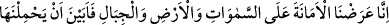
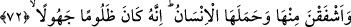

ile tahliye) ve onlarla sıfatlanmayı elde eder ki bu büyük kurtuluştur.
Sahîh-i Müslim’de Câbir (r.a.)’dan rivâyet edildiğine göre Rasûlullah (s.a.) şöyle
buyurmuştur: “Bundan sonra (malûmunuz olsun ki) sözün en hayırlısı Allâh’ın
kitabıdır. Yolun en hayırlısı da Muhammed’in yoludur.”[323] Yâni irşâdın en hayırlısı
da O’nun (s.a.) irşâdıdır.
Bilesin ki Allah Teâlâ’ya itâat ef‘al, sıfât ve zât mertebelerini tahsil; Rasûlü’ne itâat
şerîat ipine sımsıkı sarılmakladır. Çünkü inkâr denizinden ve şirk karanlığından kurtuluş
ya keşf nûru ya da şerîat gemisiyledir. Bunlardan birincisi, tâlib Allâh’a O’nun nuru ile
yol bulana ve Allah ona kendi katından ilim verene kadar tâlibin talebinde Allâh’a
sarılmasıdır. İkincisi ise vahdâniyyeti ikrar, taklîdî îman ve şerîatın zâhiri ile amel
etmekle yetinmektir.
Rivâyete göre İmam Ahmed b. Hanbel (r.a.) hamamda edep yerlerini açan bir
topluluk arasında şerîata riâyet ettiği için rüyâsında ona: “Şerîata riâyetin sebebiyle
Allah seni insanlara imam yaptı.” denilmiştir.
Nakledilir ki Mu‘tezile mezhebine müntesip olanlar Bağdad’da üstünlük kazanınca,
“Ahmed b. Hanbel’e Kur’ân’ın mahlûk olduğunu söylemesi için teklifte bulunmak
gerek.” dediler. Sonra yola çıkıp onu halîfenin sarayına götürdüler. Sarayın kapısında
bir komutan vardı. Şöyle dedi: “Ey İmam! Mert ol. Ben bir zaman hırsızlık yapmıştım,
bin sopa vurdular bana. Ben suçu kabul etmedim, sonunda kurtuldum. Ben bâtıl olan bir
hususta böyle sabır göstermişsem, doğruluk üzere olan senin sabretmen daha evlâdır.”
Ahmed b. Hanbel şöyle dedi: “Onun bu sözü bana büyük bir güç verdi, tesir etti.” Onu
götürdüler. Yaşlı ve güçsüzdü. İki elini arkadan bağladılar ve bin kırbaç vurdular.
‘Kur’ân mahlûktur’ demesini istiyorlardı. Demedi. O esnada donunun ipi çözüldü, eli
bağlıydı. Hemen gaibden iki el göründü ve donu bağladı. Oradakiler bu delili görünce
onu bıraktılar.
Bu durum şundan kaynaklanmıştı: Bir defasında yalnız başına hamamda idi.
Donunu/peştemalini çözüp yıkanmak istedi. Vazgeçti, açmadı. “Şâyet halk yoksa da Hak
Teâlâ görmektedir.” dedi.
Hak yolunda belâ ve sıkıntı çekmişlerdir.
Bu belâ, kurbiyet ve velâyete sebep olmuştur.
Sabır, takvâ ve Mevlâ’ya kulluk,
Ârifler katında her şereften evlâdır.
72. Biz emâneti, göklere, yere ve dağlara teklif ettik de onlar bunu